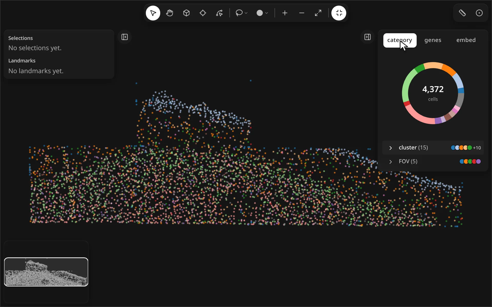
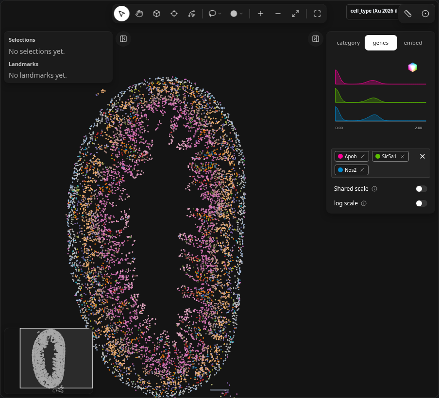
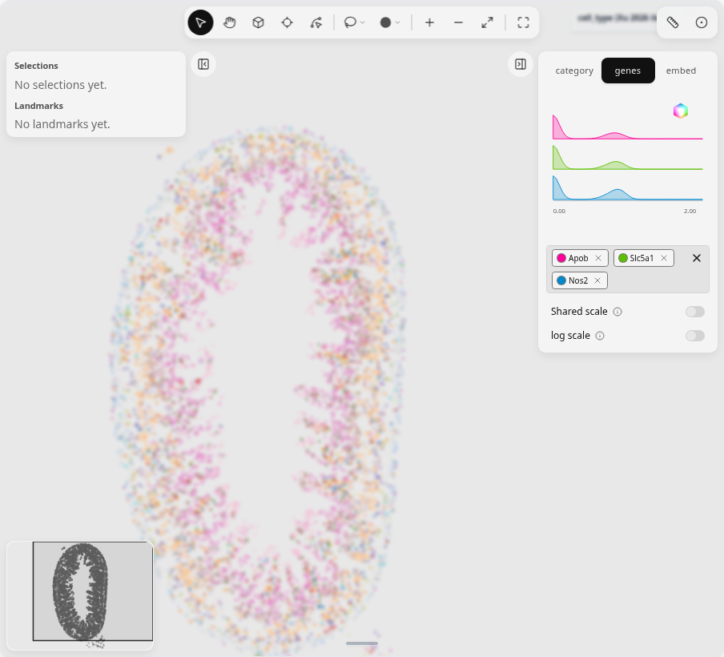
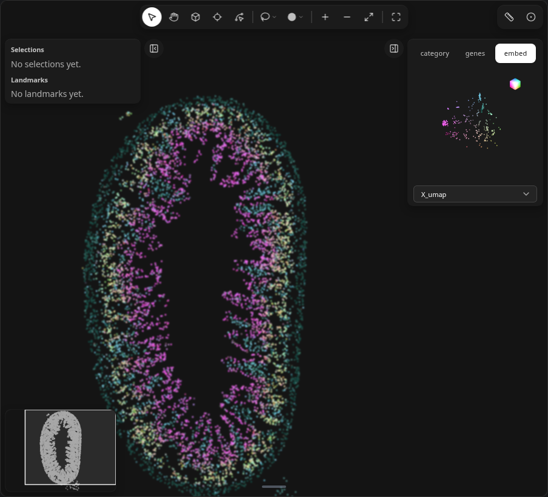
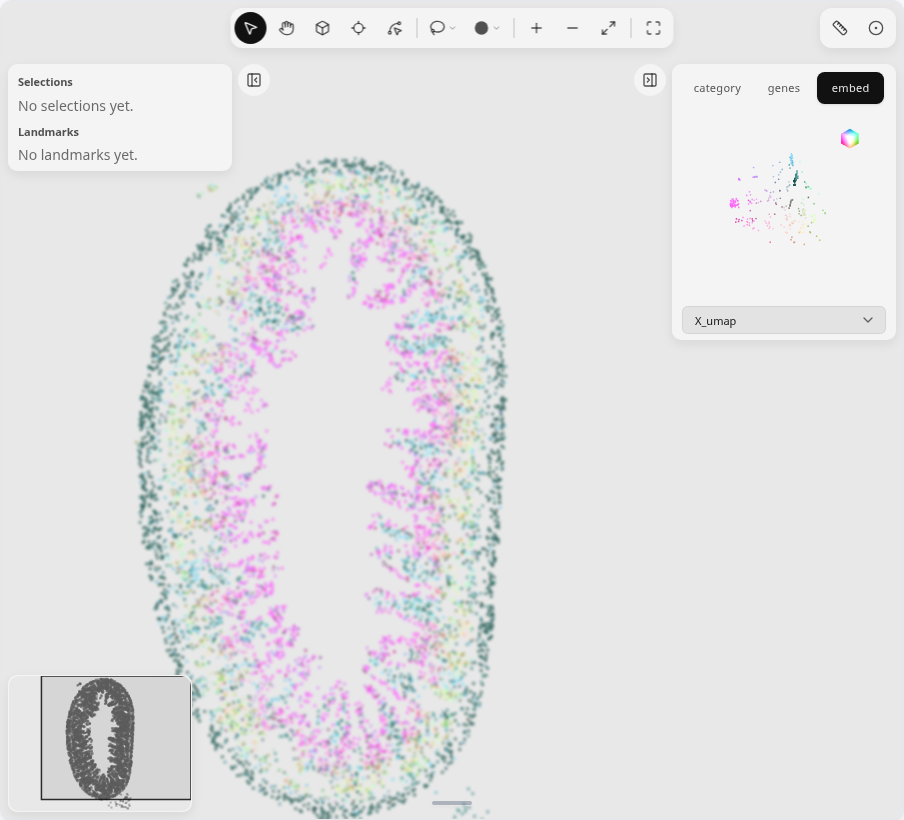
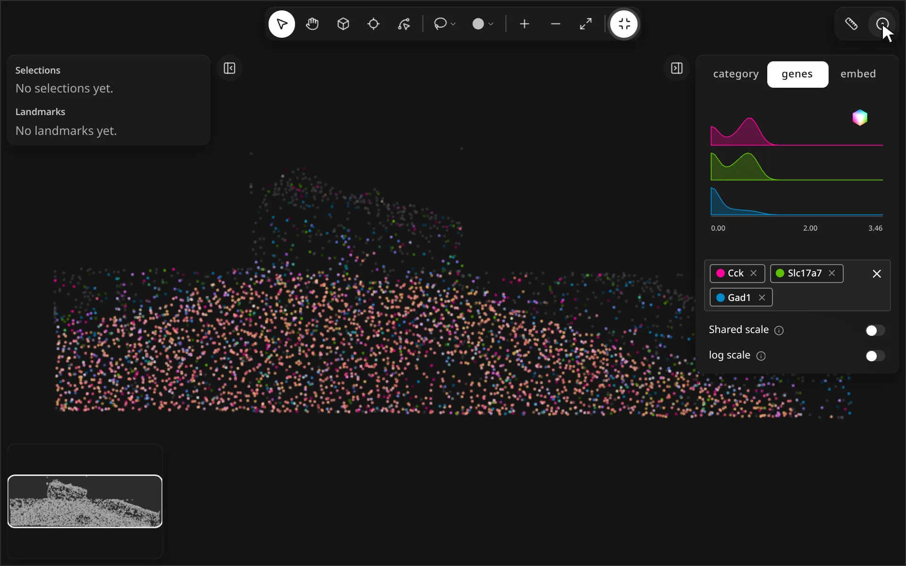
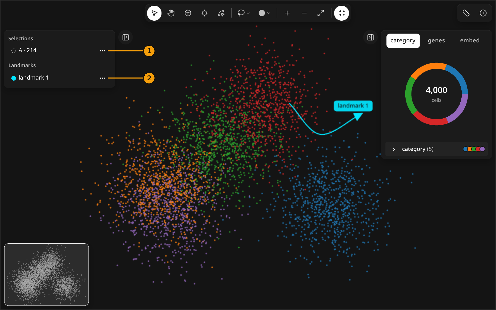
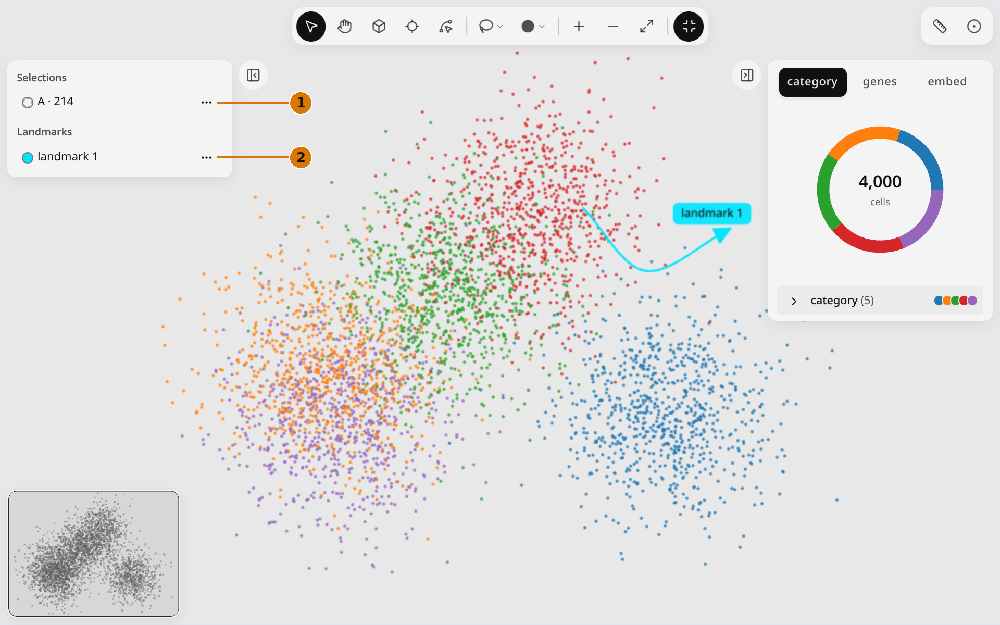

Color & layers¶

Switch the color panel between category, genes and embed; the map recolors to match.
import milume
w = milume.peek(adata, color="cell_type", genes=["GeneA", "GeneB", "GeneC"])
w.color # obs column, gene, gene list, or obsm key (e.g. "X_pca")
Color tabs¶
The right panel has three pill tabs. They have no icons, so the table names each tab.
| Tab | What it colors by | |
|---|---|---|
| 1 | category | An obs category column. Expand it () to toggle single subcategories. |
| 2 | genes | Expression of the picked genes, with ridgeline densities and a blend legend. Pick genes in the field under the legend. |
| 3 | embed | An embedding (for example X_pca) mapped to RGB, with an RGB-cube legend. Choose the embedding from the dropdown. |
genes¶
Pick up to three genes to blend them, one colour channel each. Pick four to eight and the cells colour by one combined value on a single ramp; choose Mean, Median or Max of the picked genes' normalized expression under the gene field.
Each gene's values load from the kernel the first time you colour by it, so the widget
opens fast on whole-transcriptome panels (an 18k-gene Atera breast section included).
genes=[...] preloads a short list instead, which helps when the kernel is slow to reply.
A list that would pack over 64 MiB loads on demand too, with a warning.


embed¶


Points ⇄ Raster¶

| Control | What it does | |
|---|---|---|
| points/raster | Flip between drawing each cell as a point and aggregating cells into raster bins (). The icon shows the current mode. |
Layers list¶
The left panel lists every selection and landmark.


| Control | What it does | |
|---|---|---|
| 1 | Selections | Click a row to make that selection active. |
| 2 | Landmarks | Click a row to select the landmark and open its context toolbar. |
| Layer actions | Hide / Show, Rename, Delete. | |
| Collapse left panel ([) | Hide the list; see Navigate. |
See Methods for set_color, set_raster_basis and the rest.